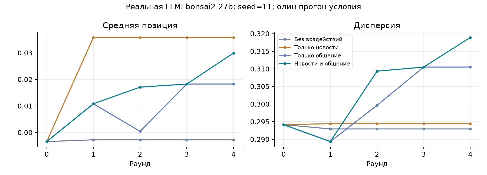
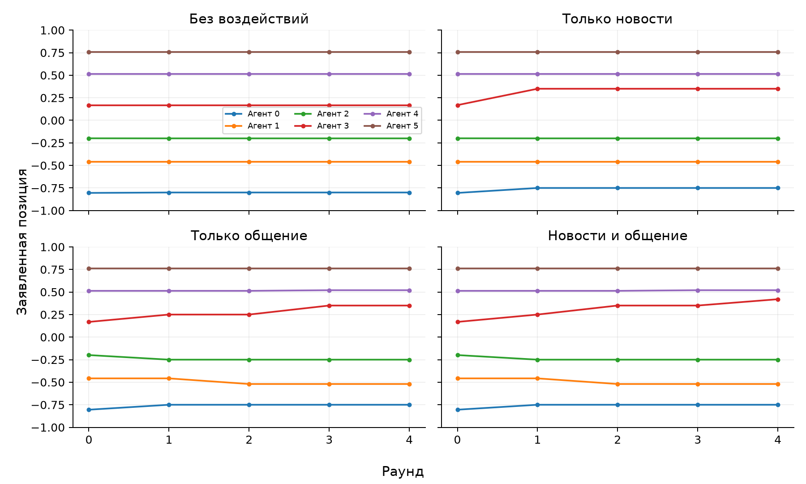

Первый пилот с реальной LLM
Дополнение к отчёту о прототипе коллективных предпочтений. 23 ноября 2026 года. Фреймворк: Concordia 2.4.0. Модель: bonsai2-27b. Исходная идея: формирование и изменение коллективных предпочтений под воздействием информации, общения и памяти.
Статус выполненной серии
Проверка подключения и основная серия имеют статус: ok. Выполнено 102 реальных запросов; успешных ответов 102, валидных действий 102. Запрошенный предел: 102 запроса. Набор включает smoke на шести агентах и четыре условия по четыре раунда. В отличие от первого этапа здесь действительно использовался внешний LLM API.
| Показатель | Фактическое значение |
|---|
| Шлюз | https://ftii.llm.actcognitive.org/v1 |
| Модель в ответах | bonsai2-27b |
| Результат основной серии | 4/4 условий завершены |
| Входные / выходные токены | 32707 / 7618 |
| Всего токенов | 40325 |
| Длительность симуляций | 325.3 с |
| Невалидные действия | 0 |
| HTTP-ошибки | [] |
Денежная стоимость неизвестна: тариф шлюза не предоставлен. Числа токенов взяты из usage реальных ответов. Указанные кэшированные токены входят в prompt_tokens; они не прибавляются к общему числу повторно.
Это инженерный пилот с одним начальным состоянием на условие. Он проверяет интеграцию и позволяет выявить проблемы протокола. Он не является статистическим подтверждением социальной гипотезы и не валидирует модель на поведении людей. Первоначальные результаты с численной заглушкой сохранены отдельно.
1. Подключение и ограничения шлюза
В локальном .env был заполнен ключ, но остались стандартный OpenAI base URL и пустое имя модели. Адрес заменён на присланный пользователем шлюз, модель - на bonsai2-27b. Сам ключ не выводился в инструменты, не передавался в промпты и не включался в протокол или снимок исходного кода.
Использован существующий адаптер Concordia LanguageModel с HTTP POST /chat/completions. Системное сообщение задаёт симуляцию вымышленного участника и JSON-ответ, пользовательское содержит сценарий, профиль, текущую позицию и разрешённые наблюдения. Реальные ответные объекты содержат имя модели, идентификатор ответа, finish_reason и usage, которые сохранены в журналах.
| Ограничение | Реализация |
|---|
| 20 запросов / мин | Общий для процесса шлюз запросов: не менее 3.2 с между стартами и проверка скользящего окна 60.1 с |
| 100 000 токенов / мин | Предварительное консервативное резервирование: UTF-8 байты текста, бюджет ответа и запас на оформление сообщений |
| Не больше двух одновременно | Пилот использует один одновременный запрос; общая блокировка на сетевой вызов |
| Бюджет серии | Smoke 6 запросов, затем 4 × 24; автоматические повторы отсутствуют |
| Параметры генерации | temperature=0, max_tokens=300; reasoning не включался явно |
| Останов при ошибке | Серия прерывается после первого неуспешного условия; сырые ответы и частичный результат сохраняются |
Скорость ограничивается внутри одного процесса. Этот механизм не координирует одновременно запущенные независимые процессы или другие программы, использующие тот же личный ключ. Во время следующей серии следует запускать один исполнитель. Токенный лимит применяется к предварительной оценке; фактический расход отдельно сверяется по usage.
Срок действия и остальные свойства шлюза взяты из сообщения пользователя. Картинки, bbox, tool calling, контекст 192K и режим reasoning в этом опыте не проверялись: для задачи использованы только короткие текстовые запросы.
2. Сценарий и план сравнения
Шесть агентов выбирают развитие вымышленной библиотеки: +1 означает приоритет цифрового доступа, -1 - печатных книг. Роли: студент, родитель, библиотекарь, учитель, пенсионер и разработчик. У каждого фиксированы исходная позиция и доверие источнику. Все четыре условия используют одни и те же профили, seed=11 и начальные позиции.
Исходные позиции:
[-0.804762, -0.457579, -0.199216, 0.168466, 0.512988, 0.759412]
Сеть: кольцо, по два соседа у агента.
Окно извлечения памяти: один раунд.
| Условие | Отличие |
|---|
| Без воздействий | Нет ни новостей, ни сообщений соседей |
| Только новости | Один информационный импульс +0.8 в первом раунде; общения нет |
| Только общение | Сообщения соседей из предыдущего раунда; новостей нет |
| Новости и общение | Один информационный импульс и общение по кольцу |
Новость сообщает, что вымышленный опрос поддерживает цифровой доступ. Сообщения соседей передаются вместе с их явной численной позицией. Это проверка совместного влияния текста и самооценки позиции, а не чисто текстового убеждения. Все наблюдения раунда формируются по снимку предыдущего состояния до первого действия текущего раунда.
Ответ должен быть JSON ровно с двумя полями: opinion - конечное число в [-1,1], message - строка от 1 до 800 символов. Модель может оставить или изменить позицию; закон численного обновления ей не навязывается. Действие проходит строгую проверку перед фиксацией. Собственные тексты прошлых действий не включаются в память автоматически: между раундами переносится текущая позиция, а память содержит внешние наблюдения.
Для сравнения сохранён расчёт линейного правила первого этапа с теми же профилями, графом и условиями. Оно имеет коэффициенты 0.25 для доверия новости и 0.30 для соседей. Совпадение с ним не является целью LLM: это прозрачная точка отсчёта для характера и масштаба изменений.
3. Коллективные результаты
| Условие | Среднее LLM | Дисперсия | |Сдвиг| | Среднее правила |
|---|
| Без воздействий | -0.0028 | 0.2929 | 0.0009 | -0.0034 |
| Только новости | 0.0358 | 0.2944 | 0.0395 | 0.1272 |
| Только общение | 0.0182 | 0.3105 | 0.0594 | -0.0034 |
| Новости и общение | 0.0299 | 0.3189 | 0.0711 | 0.1272 |
Все значения - финал четвёртого раунда одного прогона на условие. Средний модуль сдвига считается относительно индивидуальных исходных позиций. Дисперсия отражает разброс шести заявленных оценок. Она сама по себе не доказывает или опровергает поляризацию.

Разности итоговых средних относительно контроля: новости +0.0386, общение +0.0210, совместное условие +0.0327. Контраст взаимодействия combined - news_only - peers_only + control равен -0.0269.
Эти контрасты описывают данный прогон. Случайность генерации, особенности ролей и формулировок пока не отделены от эффектов условий. При одном прогоне нет оценки дисперсии между независимыми симуляциями и нет оснований сообщать статистическую значимость. Отдельные агенты внутри одной взаимодействующей сети не являются независимыми повторениями эксперимента.
4. Что показывают различия с численным правилом
Без новых воздействий средний модуль сдвига равен 0.000924. Малые сдвиги в контроле связаны с изменением самооценки модели; в сохранённых траекториях видно округление исходных значений. Контроль не обязан быть строго неподвижным, как детерминированная заглушка, поэтому его необходимо запускать вместе с опытными условиями.
Новость дала среднюю итоговую позицию 0.0358 против -0.0028 в контроле. Индивидуальный средний модуль сдвига составил 0.0395. Это реакция на единственный информационный импульс в выбранном контексте, а не оценка универсальной восприимчивости к новостям.
При одном общении дисперсия изменилась с 0.2941 до 0.3105; у линейного контроля итоговая дисперсия 0.0573. В данном прогоне реальная LLM не воспроизвела усреднение, автоматически заложенное в численное правило. Следовательно, численное влияние соседей и текстовая реакция модели не взаимозаменяемы.
В совместном условии средняя позиция равна 0.0299, дисперсия 0.3189. Его отличие от отдельных каналов необходимо проверять повторениями, поскольку одна пара прогонов не отделяет взаимодействие факторов от вариативности генерации.
| Условие | A | B | Нейтральные | Прямые смены стороны |
|---|
| Без воздействий | 50% | 50% | 0% | 0 |
| Только новости | 50% | 50% | 0% | 0 |
| Только общение | 50% | 50% | 0% | 0 |
| Новости и общение | 50% | 50% | 0% | 0 |
Границы категорий: A при x > 0.1, B при x < -0.1, остальные относятся к нейтральной зоне. Прямая смена стороны считается относительно исходного знака за этими порогами. Даже при сохранении всех исходных сторон могут меняться интенсивность предпочтений и тексты аргументов.
Содержательная реализуемость подтверждена в узком смысле: модель возвращает разные состояния и аргументы под разными наблюдениями, а фреймворк позволяет их измерять. Интерпретировать найденные отличия как закономерности реального сообщества пока нельзя. Для этого нужны заранее заданные гипотезы, устойчивость к промптам и внешняя валидация.
5. Индивидуальные траектории и тексты

Индивидуальные траектории позволяют отличать сохранение исходных сторон, переходы через нейтральную зону и небольшое округление чисел. При анализе нельзя считать любой ненулевой сдвиг результатом убеждения: в контроле возможны дрейф самооценки и приведение позиции к удобному числу.
Примеры реальных ответов модели
Без воздействий, агент 0, последний завершённый раунд, opinion=-0.8: «I still believe printed books should be the core of our library's development. Physical books offer a tactile experience that digital screens cannot replicate, and they are essential for readers who prefer not to rely on technology or battery life. While digit…»
Только новости, агент 0, последний завершённый раунд, opinion=-0.75: «I still lean toward printed books because they offer a tactile reading experience that digital screens cannot fully replicate. For many students and community members, physical books are essential for focus, retention, and accessibility without the need for de…»
Только общение, агент 0, последний завершённый раунд, opinion=-0.75: «I still believe printed books should be the priority for our public library. Physical books are essential for children's development and provide a distraction-free environment that supports deep reading and learning. While digital access is helpful, it cannot …»
Новости и общение, агент 0, последний завершённый раунд, opinion=-0.75: «I still lean toward printed books because they are reliable for children who need a quiet, screen-free space to focus and learn.»
Приведены сокращённые фрагменты сгенерированных ответов; полный английский текст сохранён в JSON. Они демонстрируют формат аргументации, но текстовое объяснение модели нельзя автоматически считать достоверным описанием причин изменения позиции.
6. Скорость, токены и воспроизводимость
| Условие | Запросы | Вход | Выход | Время, с |
|---|
| Без воздействий | 24 | 5714 | 1887 | 77.2 |
| Только новости | 24 | 5939 | 1716 | 76.8 |
| Только общение | 24 | 9320 | 1883 | 77.0 |
| Новости и общение | 24 | 9464 | 1732 | 76.7 |
По всей серии со smoke медиана сетевого вызова 1.69 с, 95-й перцентиль по ближайшему рангу 1.94 с, максимум 2.05 с. Ожидание ограничителя суммарно заняло 154.3 с. Время симуляции включает эти паузы, сборку агентов и сохранение промежуточных результатов.
Шлюз сообщил о 2727 кэшированных входных токенах. Полный расход с проверкой подключения: 40325 токенов. Поскольку тариф неизвестен, денежный эквивалент не рассчитывается. Скорость локальной заглушки из первого отчёта нельзя переносить на реальный API.
Что сохранено
protocol.json содержит план и SHA-256 исходного кода. Папка source_snapshot хранит использованные модули и исполнитель серии. Каждый результат содержит конфигурацию, профили, граф, события, позиции по раундам, точные промпты, системное сообщение, ответы, метаданные провайдера, usage, сетевое время и ожидание ограничителя. checkpoint-файлы обновлялись после каждого валидного ответа.
Добавлены корректные started_utc и finished_utc для новых запусков. Исторические файлы первого этапа не исправлялись задним числом. Для новой серии не передавался provider seed: seed=11 управляет только профилями симуляции. В протоколе хранится запрошенное имя модели и имя из ответа; неизменность внутренней версии весов шлюзом отдельно не гарантирована.
Перед запуском пройдены 17 тестов: прежние 14 и три проверки ограничителя на виртуальном времени. Проверены минимальный интервал, скользящий лимит запросов и резервирование токенов. Подставной транспорт в тестах не делает сетевых запросов и не расходует личный лимит.
7. Сложность и ограничения интерпретации
| Этап | Сложность | Наблюдение |
|---|
| Настройка провайдера | 1/5 | Потребовалось указать base URL и модель; существующий текстовый API-контракт подошёл |
| Ограничения шлюза | 3/5 | Потребовались общий для процесса ограничитель, учёт скользящих окон и раздельное измерение ожидания/сети |
| Формат ответов | 2/5 | Сохранено 102 валидных действий из 102 успешных ответов; формат проверяется строго |
| Проведение серии | 2/5 | Последовательное исполнение, проверки после каждого ответа и останов при ошибке |
| Научная интерпретация | 4/5 | Нужно отделить взаимодействие, знания самой модели, роли, округление и случайность генерации |
Шкала сложности - инженерная оценка: 1 означает штатную настройку, 3 - специальную реализацию или диагностику, 5 - отдельный исследовательский этап. Человеко-часы не измерялись. Возможность получить правдоподобный текст быстро не снимает сложности проверки механизмов.
Ограничения, выявленные или сохраняющиеся
Профиль содержит исходную позицию на каждом шаге, поэтому модель видит постоянный численный якорь; собственная прошлая аргументация в контекст не возвращается. Роли могут включать стереотипы из знаний модели. Доверие передаётся числом, но его использование не навязано и не измерено отдельно. Новости представляют собой один короткий вымышленный опрос, а не сопоставимые по качеству реальные источники.
Память равна одному раунду, сеть фиксирована, агенты не выбирают собеседников. Все используют одну LLM и один общий системный промпт. Четыре раунда и шесть участников не позволяют делать выводы о долгосрочной коллективной динамике. Численное заявление позиции не равно реальному выбору человека, а сгенерированное объяснение не является причинным свидетельством.
Общий исходный seed делает условия сопоставимыми по профилям, но не устраняет недетерминированность LLM. Не проводились независимые повторы, перестановки ролей и имён, перефразирование новости, отрицательная новость, другие модели или сравнение с реальными данными. Эти проверки должны предшествовать сильным выводам об эффекте общения.
8. Что делать следующим
Сначала оценить контроль: масштаб самопроизвольного дрейфа, округление и возможные переходы стороны без новых наблюдений. Затем сравнить покомпонентные разности с новостным и коммуникативным условиями, не ограничиваясь средним сообщества. Текущий стенд позволяет это делать по сохранённым траекториям без повторного обращения к API.
Следующая содержательная серия: четыре базовых условия для seed 22, 33, 44, 55, затем независимые повторы генерации при фиксированном профиле. Перед ней определить критерии допустимого дрейфа, минимального интересующего эффекта, число повторов и токенный бюджет. Четыре дополнительных seed дают до 384 запросов; отдельные повторы увеличивают этот объём и должны учитываться заранее.
После устойчивого базового сравнения проверить память и структуру сети: combined_memory4, complete и segregated. Отдельно убрать из наблюдений численные позиции соседей, чтобы сравнить текстовое влияние с численным якорем. Для памяти добавить передачу собственных прошлых аргументов и сравнить её с переносом только текущей позиции.
Повторение технической серии
.\.venv\Scripts\python.exe -m unittest discover -s tests -v
.\.venv\Scripts\python.exe scripts/run_live_pilot.py --output artifacts/runs/live_pilot_repeat_01
.\.venv\Scripts\python.exe scripts/build_live_report.py --input artifacts/runs/live_pilot_repeat_01
Повторный live-запуск снова расходует до 102 запросов. Для офлайн-анализа уже полученных данных достаточно команды build_live_report.py с текущим каталогом; она не обращается к шлюзу. По умолчанию имена отчётов фиксированы, поэтому перед отдельным исследовательским повтором сохранять новую версию отчёта.
| Путь | Содержание |
|---|
| artifacts/runs/live_pilot_2026-11-23_v1 | Исходные результаты этой серии, checkpoints, protocol и снимок кода |
| analysis.json; summary.csv | Сводные метрики и расход токенов в папке серии |
| reports/live_pilot_report.pdf | Это дополнение к первоначальному отчёту |
| reports/live_pilot_report.html | Редактируемая HTML-версия |
| reports/experiment_report.pdf | Исторический отчёт о численном этапе, сохранён отдельно |
Фактические утверждения этого дополнения основаны на локальных ответах шлюза и журналах серии. Социальная постановка взята из первой идеи пользователя. Новые внешние публикации для этого технического теста не использовались.